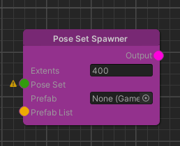
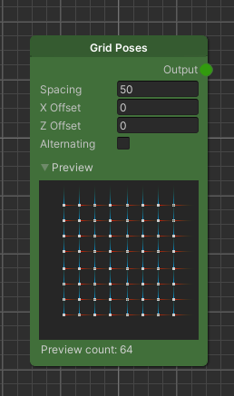
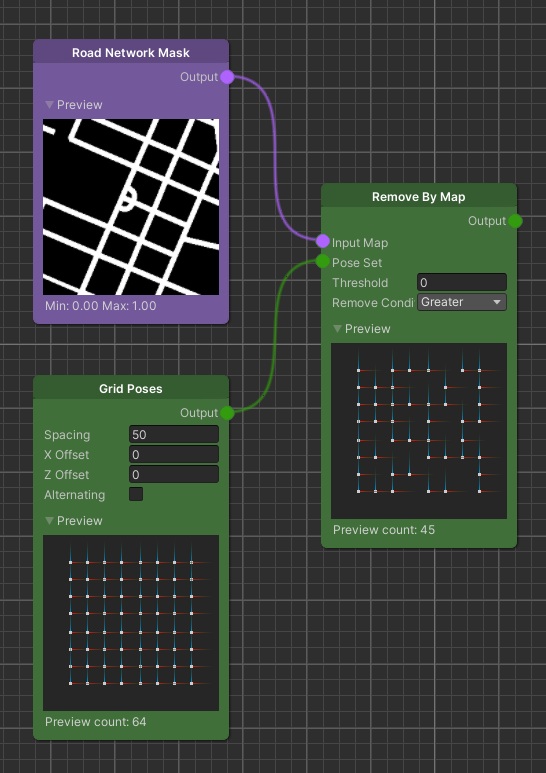
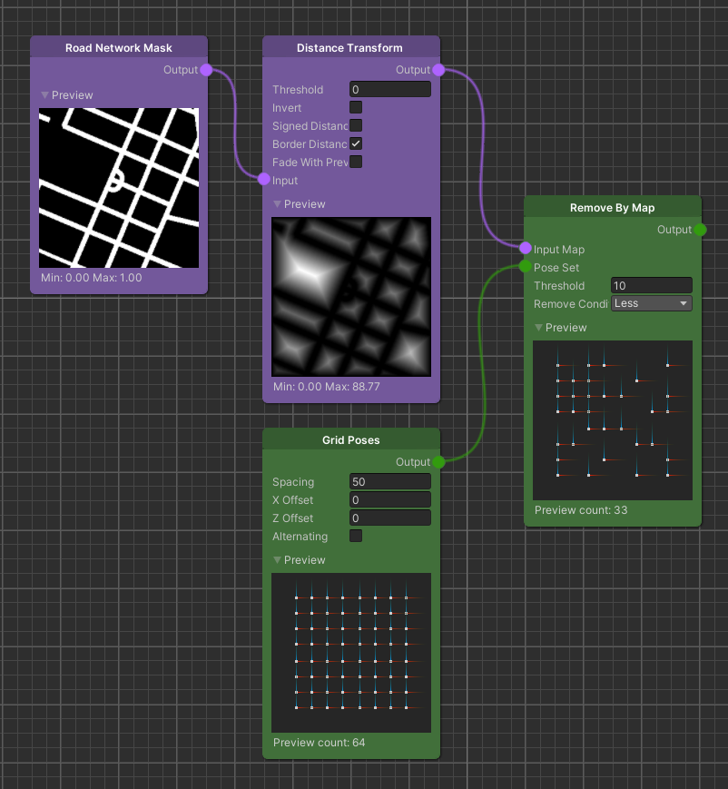
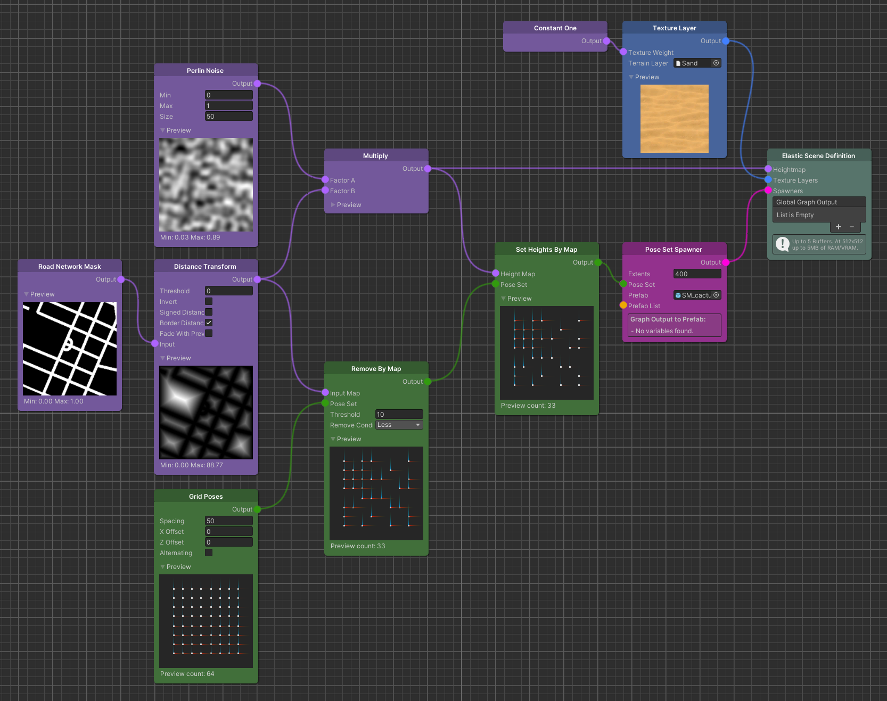
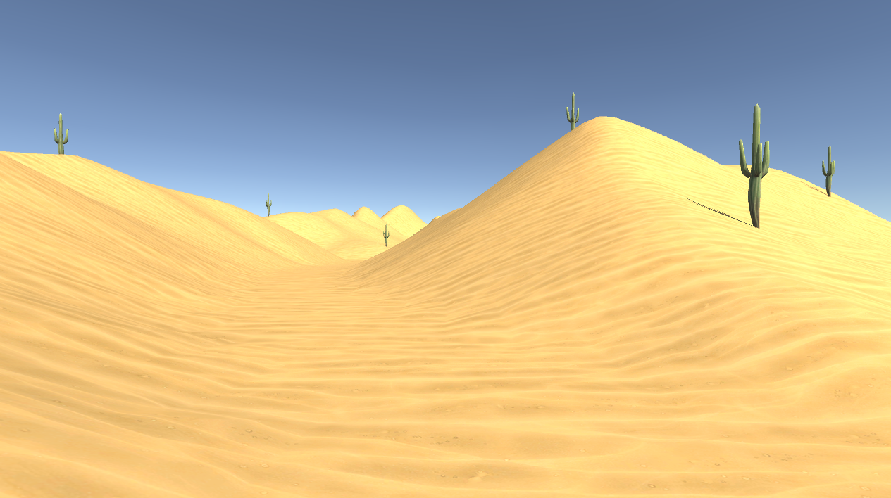

Pose Based Spawning
The graph system of the Elastic SDK ships with a variety of different Spawner nodes. Some of these fulfill a rather special purpose while others can be used in a more general manner. One of such general purpose Spawners is the Pose Set Spawner node.

As its name suggests, the Pose Set Spawner utilizes the Pose Set node type to spawn game objects at runtime. In other words, you have to create a set of Poses and connect it to the Pose Set input, so that the Spawner is able to create instances inheriting the position and the rotation of the associated Poses.
While this Spawner node also has an Extents parameter controlling the size of its Moving Grid (see Moving Grid), as well as a Prefab and Prefab List input (see Prefab List & Data Provider), the possible settings seem to be rather sparse compared to other Spawner nodes of the Elastic SDK. However, since all of the available Pose Set Sources and Modifiers can be applied to generate a set of Poses as input for the Spawner, it turns out to be the most versatile one in the Elastic SDK.
The following guide will show you how to apply some basic Modifiers to generate a Pose Set ready to be used for a Pose Set Spawner.
Initial Pose Set
To create an initial Pose Set that works in an elastic environment the Elastic SDK ships with a variety of Pose Set
Sources. Let us start with a Grid Poses node which
will create a virtual grid where the distance between the Poses is equal to the node's Spacing parameter.
You can leave the settings at their default values or play around with them to see how the grid reacts.

Note
The Pose Set nodes generate Poses inside the extents of the Elastic Scene Generator but only Poses inside the extents of the Moving Grid of the Pose Set Spawner will be spawned.
From here on we can start modifying our Pose Set.
Remove By Map
Since a content creator usually doesn't want to spawn objects on the road to avoid collisions with the player, we add a
Remove By Map node next. Based on a Map input
this node will remove all Poses from our grid that fall inside the remove condition. This means we need a Map. So let us
create a Road Network Mask node as well.
Next, to make sure that everything on the road is removed, set the Threshold parameter to 0 and the Remove Condition
to Greater. Effectively this means that every Pose that resides at a location where the Road Network Mask has a value
greater than 0 will be removed from the set.

Note
Don't be confused if the result of the Remove By Map node looks wrong at first glance. The Pose gizmos take up more pixels than the actual position where they are located, so that you can see them better in the preview.
A more advanced way of removing Poses on and near the road is to control the distance away from the road where Poses should be removed. To achieve this we apply the Distance Transform to the Road Network Mask and take the result as input for the Remove By Map node. Then we set the Remove Condition parameter to Less and change the Threshold to the minimum distance away from the road where Poses are allowed.

This setup becomes important if we want to spawn larger object near the road, since the objects themselves have a certain size but their position is relative to their pivot. So with the generated Pose Set above, we can make sure that objects with a radius of up to 10 meters (assuming a centered pivot) can safely be spawned without intersecting the road.
Note
In some special cases where you want to spawn objects right on the edge of the terrain and you are not using the Elastic Scene Generator's Blend Margin, you might want to disable Border Distance on the Distance Transform node to get accurate results from the threshold based Pose removal. Keep in mind that this will have effects on the terrain if you use the same result for the terrain's height map.
Set Height By Map
To bring this setup to a usable state, we have to add one more Pose Set Modifier. This time the Set Heights By Map node uses a Map input to place the generated Poses at a height equal to the value the Map has at the location of said Poses. We use this to place objects at the same height the terrain has that we generate.
Finally we can connect the generated and modified Pose Set to the Pose Set Spawner input and link its output the Elastic Scene Definition. Whatever prefab you chose will now automatically spawn at least 10 meters away from the road the player is driving on.

